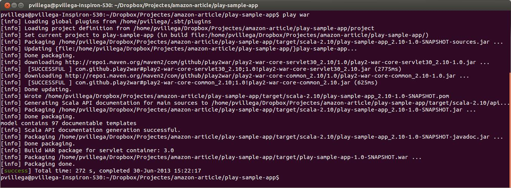
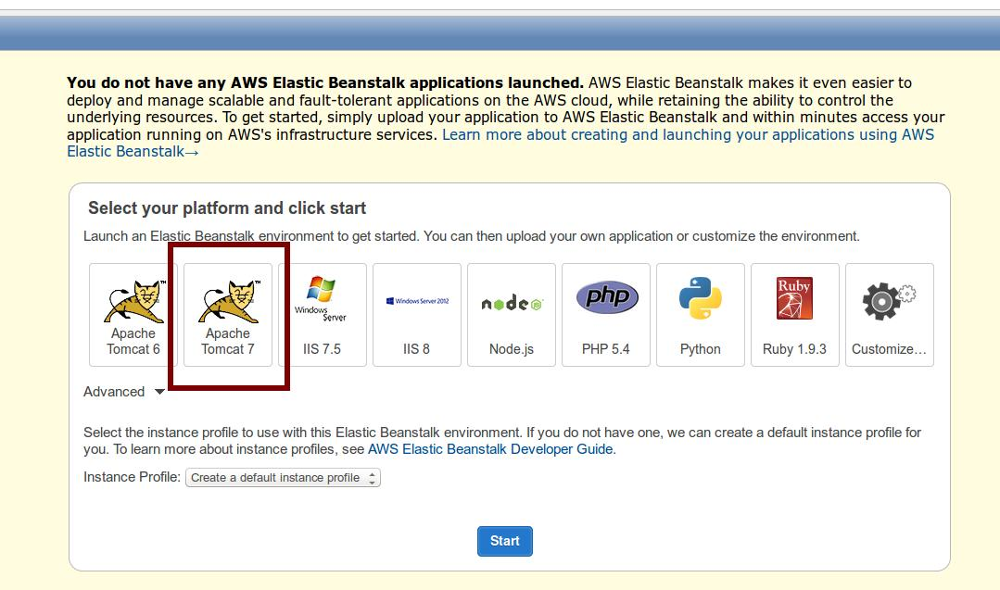
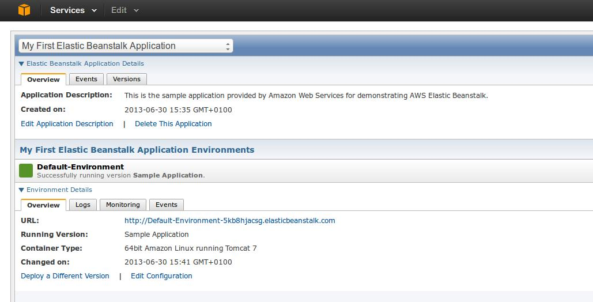
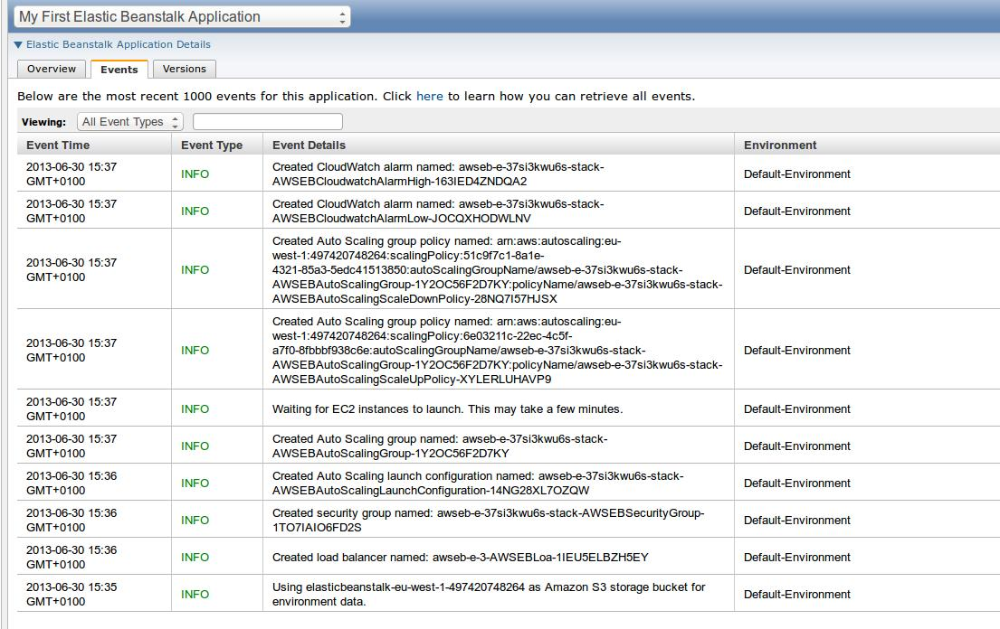
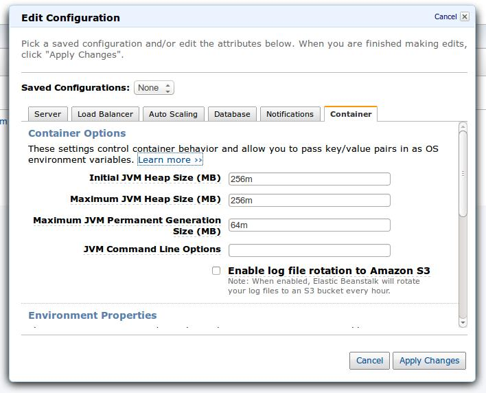
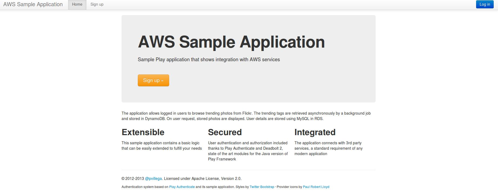

Another option that Amazon AWS provides to deploy the sample application is Elastic Beanstalk. Beanstalk allows you to deploy a WAR file in a Tomcat (versions 6 or 7) environment. The system automatically manages load balancing and scalability of the application, while giving you full access to all Amazon AWS components.
We have to give a warning about the integration between Beanstalk and Play Framework. While Beanstalk has many benefits and it works fine with a Play Framework application, it is not the optimal platform to execute Play applications. By default, Play expects to be run using its embedded Netty server. Using a WAR file to run the application inside a JEE container reduces the performance and, in some Servlet engines, you lose access to some of the Play API that these engines don't support, like Websockets.
That said, it is possible to deploy Play in Beanstalk, and in some scenarios it is the best option. If you don't use certain API and you want Amazon AWS to configure your EC2 instances and the scalability of your application, please use Beanstalk; it works and you can focus on the application, not on configuring AWS. But you should be aware of the trade off you are making.
The following steps assume that both DynamoDB and RDS MySQL are properly set up in Amazon AWS. Check the previous chapter for more information on the steps to follow to configure them.
Play Framework doesn't provide a native tool to generate WAR files from the application source. Thankfully, the community has taken to the challenge and Damien Lecan has created a plugin to that end, Play2War. This section describes the steps to integrate the plugin with our existing code base and how to generate the WAR file from it
Integrating Play2War with an existing Play application is very straightforward. Play2War runs as a SBT plugin, so first of all we need to edit project/plugins.sbt and add the following line:
addSbtPlugin("com.github.play2war" % "play2-war-plugin" % "1.0")
This line allows calling Play2War commands via SBT, both by Play and via the terminal.
The second step is to edit project/Build.scala and add the Play2War configuration to the project, so Play Framework knows how to generate the War file when asked to. The resulting configuration looks like the following:
1 2 3 4 5 6 7 8 9 10 11 12 13 14 15 16 17 18 19 20 21 22 23 24 25 26 27 28 29 30 31 32 33 |
import com.github.play2war.plugin._
object ApplicationBuild extends Build {
val appName = "play-sample-app"
val appVersion = "1.0-SNAPSHOT"
val appDependencies = Seq(
javaCore,
javaJdbc,
javaEbean,
"org.webjars" %% "webjars-play" % "2.1.0-2",
"org.webjars" % "bootstrap" % "2.3.2",
"com.amazonaws" % "aws-java-sdk" % "1.4.5",
"com.feth" %% "play-authenticate" % "0.2.5-SNAPSHOT",
"be.objectify" %% "deadbolt-java" % "2.1-SNAPSHOT",
"mysql" % "mysql-connector-java" % "5.1.25"
)
val main = play.Project(appName, appVersion, appDependencies)
.settings(Play2WarPlugin.play2WarSettings: _*)
.settings(
resolvers += Resolver.url("Objectify Play Repository (release)", url("http://schaloner.github.com/releases/"))(Resolver.ivyStylePatterns),
resolvers += Resolver.url("Objectify Play Repository (snapshot)", url("http://schaloner.github.com/snapshots/"))(Resolver.ivyStylePatterns),
resolvers += Resolver.url("play-easymail (release)", url("http://joscha.github.com/play-easymail/repo/releases/"))(Resolver.ivyStylePatterns),
resolvers += Resolver.url("play-easymail (snapshot)", url("http://joscha.github.com/play-easymail/repo/snapshots/"))(Resolver.ivyStylePatterns),
resolvers += Resolver.url("play-authenticate (release)", url("http://joscha.github.com/play-authenticate/repo/releases/"))(Resolver.ivyStylePatterns),
resolvers += Resolver.url("play-authenticate (snapshot)", url("http://joscha.github.com/play-authenticate/repo/snapshots/"))(Resolver.ivyStylePatterns),
Play2WarKeys.servletVersion := "3.0"
)
}
|
As you can see in line 1, we are importing the Play2War plugin which we integrate with our project in line 21. Line 30 sets the Servlet environment for which we are creating the War file. In this case we target Servlets 3.0, which has substantial improvements over Servlets 2.5.
Play2War provides some other configuration options that are not covered in this guide. Please check them to ensure full compatibility with the JEE container of your choice.
One concern when creating a War file from the sample application is how to manage critical configuration values. This includes passwords and secret keys used to connect to SaaS services, which we don't want to commit to source control.
Fortunately, the default way that Play uses to manage these keys is still valid when creating a War file. As it was mentioned in the first chapter, any configuration property provided as JVM option via the -D flag overrides the corresponding entries in application.conf.
This means that we can store critical information in the JVM options string, instead of adding it to conf files where it could be committed to source control by mistake.
As it is explained later on, Beanstalk supports this and provides a simple way to add JVM options to a Java container.
To generate the War file, open a terminal window and go to the root folder of the sample application. In there, execute:
$play war
to execute the SBT plugin that builds the War file. The resulting War is stored at the target folder that is created at the root of the application. In this example the file is at:
$target/play-sample-app-1.0-SNAPSHOT.war
The output of executing Play2War is:

As you can see, the Play2War plugin generates a set of jars from the source code of the application and stores them inside the War file. All the configuration required to run the file inside a container is added as per the Servlet version we selected in Build.scala.
At this stage we have created a fully functional War file, ready to be deployed in Beanstalk.
As we want to deploy the War file in Elastic Beanstalk, first we have to create an instance via the Elastic Beanstalk Console. An instance consists on a servlet container in which we deploy the War file. As mentioned before, Amazon manages many aspects of the container, simplifying the maintenance of the application.
When accessing the console, the first screen allows us to select a container for the application:

We
select Tomcat 7 as our target container and press Start.
Beanstalk starts creating the environment, which may take several
minutes to be ready.

As you can see in the Events view, Beanstalk is creating all the necessary components for the application, including auto-scaling and CloudWatch Alarms, so you don't have to worry about managing them:

Once the initial deployment is ready, we can start configuring our application.
In the Overview tab, the Edit Configuration link gives access to several settings for the application. These include the Container Settings area, where we can modify the heap of the application and, more importantly, provide JVM options:

We can use the JVM options to provide configuration settings to the application, like the JDBC url to our RDS instance. Remember that in a Play application, options provided via -D flags in JVM override settings in application.conf. For example, we can provide the following string:
-Ddb.default.url="<jdbc url>" -Ddb.default.user=user -Ddb.default.password=password
to tell the application to use the RDS instance created in the previous chapter.
After applying the changes, the application will restart and we are ready to deploy the War file in Tomcat.
Deploying to Beanstalk is a simple process. Beanstalk uses the concept of Versions to manage the application. Each new version is a new War file uploaded to the server. When deploying, we can add comments to facilitate tracking of changes to the application. At any moment we can download the War file associated to a version, to do local testing, and we can revert to previous versions if needed.
When we created the Beanstalk environment, we selected Tomcat 7 as the container. To facilitate deployment to Tomcat 7, first you need to rename the War generated by Play2War to ROOT.war. This will turn our sample application into the root application of the container.
Once ready, select Upload new version in the Elastic Beanstalk dashboard. It opens a pop up window where all the details of the version can be added, before deployment:
After pressing Upload and Deploy the War file is uploaded and the server is restarted to deploy the new release. This process takes a few minutes, as the War file being uploaded can be around 60Mb and the server needs to deploy the War and restart after the upload finishes.
If everything works as expected, a new version of the application is shown in the dashboard. Otherwise, check the logs to find the reason why the application is not deploying properly.
A common error when deploying to Beanstalk is to have a mismatch between JDK versions in the development environment and the container. Beanstalk uses JDK 1.6. If you create your War file using a newer version, like JDK 1.7, application deployment fails due to class version issues. Be aware of this limitation when generating the War file.
At this stage we have the application deployed and running. If we access the url provided by Beanstalk, which in this example is http://default-environment-5kb8hjacsg.elasticbeanstalk.com/, we can see the homepage:

Beanstalk
has full access to all AWS services. This
means that you can extend your application as required, usually with
minimal effort as AWS provides convenient interfaces between
Beanstalk and other AWS components.
For example, to modify the generated domain linked to your application (which is not very user friendly) and use your own custom domain you can follow the steps described in the documentation, which use Amazon Route 53 to provide this mapping.
This concludes the article about deploying a Play Framework application in Amazon AWS. Through it we have seen how to create a Play Framework application that uses Amazon AWS services, how to deploy it in EC2 using Ansible and how to run a War version of this application in Elastic Beanstalk.
The application is a good starting point from which to build your own application. Feel free to clone and fork the Github project and develop your own. You will see that by using these three tools (Amazon AWS, Ansible and Play Framework) your productivity increases and you are able to create amazing websites with minimal effort.
If you have any questions, feel free to contact me at @pvillega.
Cheers!